由于喜欢密码学 所以我就转逆向了
re1-xctf
虽然这题很简单 但是因为各种原因 我迟迟没做出来
开始下载附件re1.exe
找到main函数源码:
1
2
3
4
5
6
7
8
9
10
11
12
13
14
15
16
17
18
19
20
21
22
23
24
25
26
27
| int __cdecl main(int argc, const char **argv, const char **envp)
{
int v3; // eax
__int128 v5; // [esp+0h] [ebp-44h]
__int64 v6; // [esp+10h] [ebp-34h]
int v7; // [esp+18h] [ebp-2Ch]
__int16 v8; // [esp+1Ch] [ebp-28h]
char v9; // [esp+20h] [ebp-24h]
_mm_storeu_si128((__m128i *)&v5, _mm_loadu_si128((const __m128i *)&xmmword_413E34));
v7 = 0;
v6 = qword_413E44;
v8 = 0;
printf(&byte_413E4C);
printf(aOaeco);
printf("ÊäÈëflag°É:");
scanf("%s", &v9);
v3 = strcmp((const char *)&v5, &v9);
if ( v3 )
v3 = -(v3 < 0) | 1;
if ( v3 )
printf(aFlag);
else
printf((const char *)&unk_413E90);
system("pause");
return 0;
}
|
看到v3 = strcmp((const char *)&v5, &v9); v9让我们输入值后与v5比较 相同则输出flag 说明了flag就在我们的程序中 就可以通过ida查看flag
查看strings Windows发现根本就没有flag 查询资料得知 此次flag中的数据没有被当作数据 而是当作代码执行了 但我们还是有的办法的 一开始打开文件选择binary file模式 此模式不会更改flag做为代码执行 打开(shift+f12)strings窗口

这里已知了flag在文件中 那么可以在macOS终端中vim查看程序 通过/来查询数据
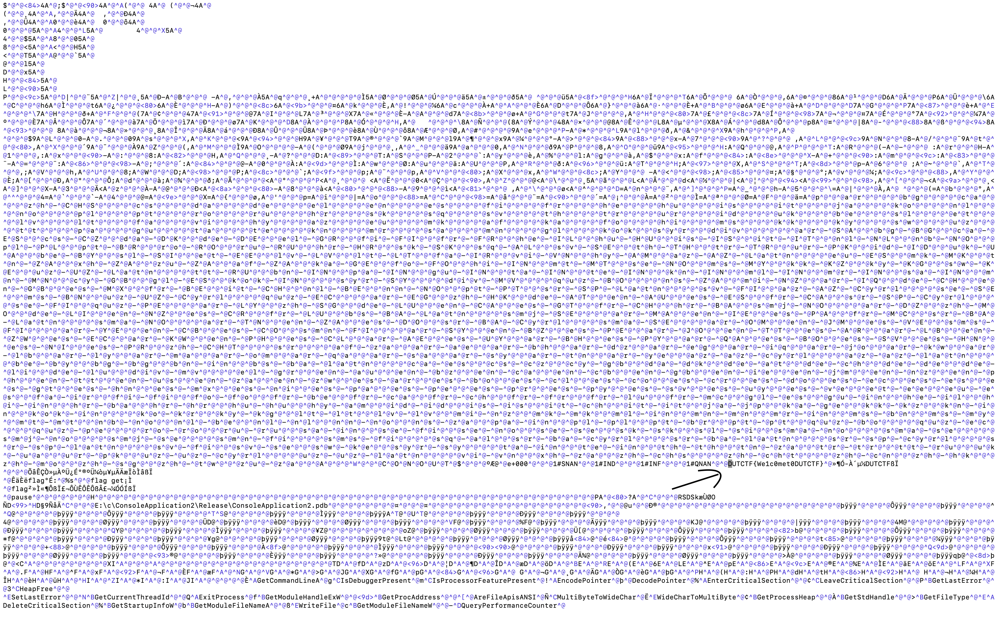
然后就找到了可爱的flag
- 还有一种办法是通过ollydgb软件 就是常说的od反汇编软件 通过搜索查询string字符串查看flag 但是我不知道什么原因 可能是上面那个flag给当代码执行了 反正我是没找到 以后懂了再说吧 因为网上大佬都是一笔带过
2-game
打开程序 是一个还可以的游戏 讲道理还挺好玩 哈哈(没错 我去玩了):
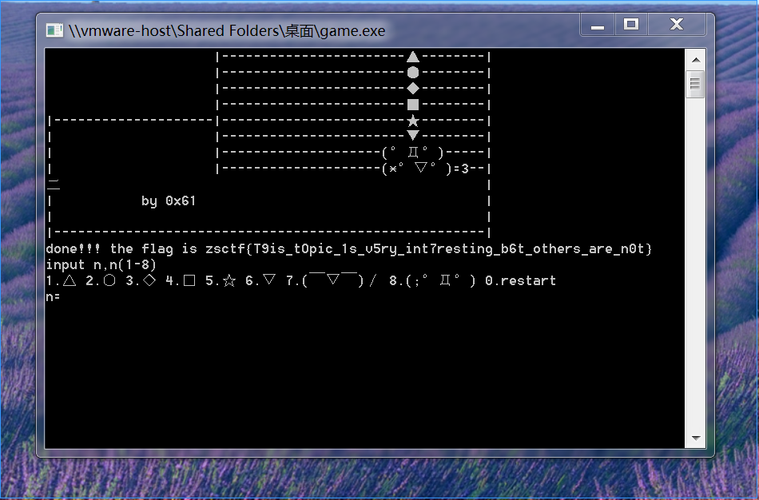
然后就拿到了flag。。
但是还是要去看看flag藏在哪里了 打开ida
程序中可以显示出来就说明了strings可能会有flag 除非flag又给按代码执行了 查询flag:
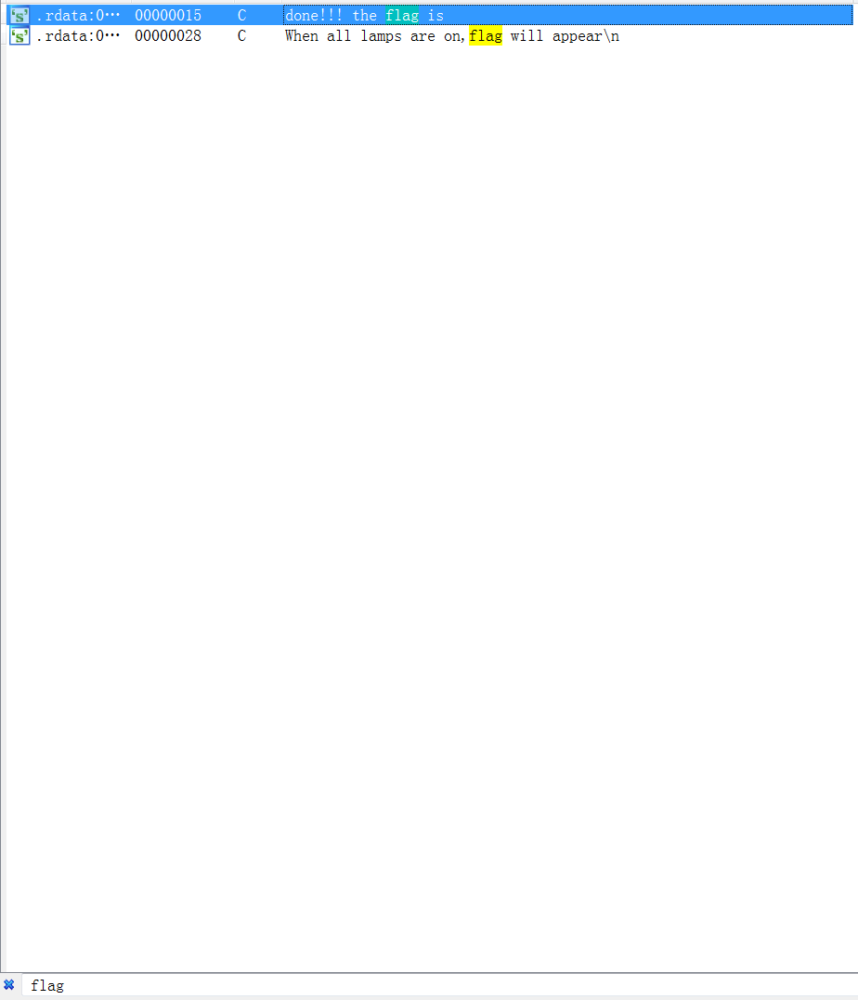
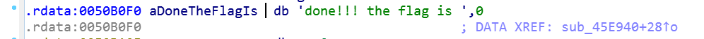
f5:
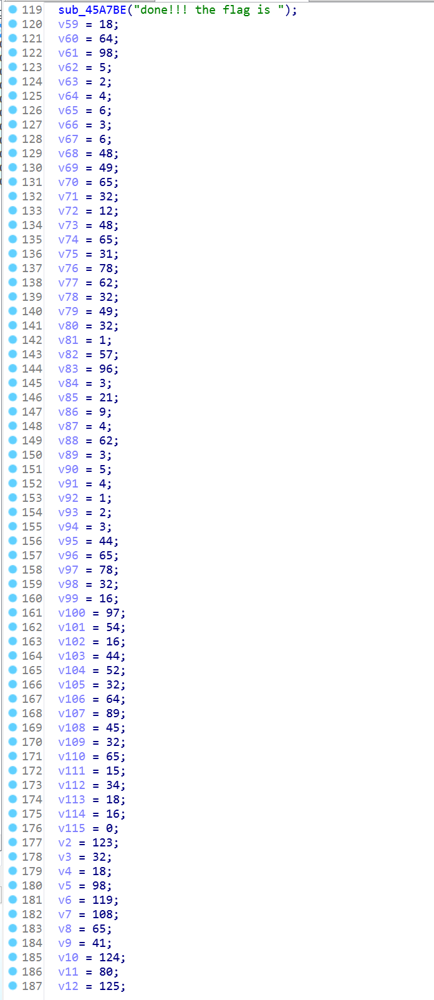
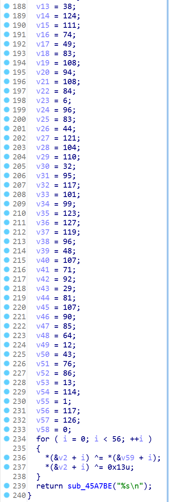
看出这里用了异或加密 所以需要写个python脚本去解密 伪代码都有了 那就相当的简单:
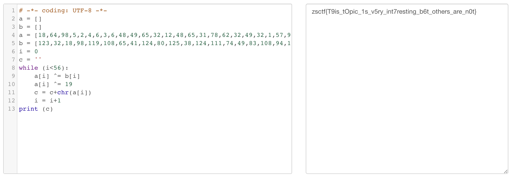
得到flag: zsctf{T9is_tOpic_1s_v5ry_int7resting_b6t_others_are_n0t}
输入:correct!
3-helloctf
打开运用程序 显示让我输入一段序列 题目提示是flag不一定是明文进行比较的 说明需要解密
然后源码:
1
2
3
4
5
6
7
8
9
10
11
12
13
14
15
16
17
18
19
20
21
22
23
24
25
26
27
28
29
30
31
32
33
34
35
36
37
38
39
40
41
42
43
44
45
46
47
| int __cdecl main(int argc, const char **argv, const char **envp)
{
signed int v3; // ebx
char v4; // al
int result; // eax
int v6; // [esp+0h] [ebp-70h]
int v7; // [esp+0h] [ebp-70h]
char v8; // [esp+12h] [ebp-5Eh]
char v9[20]; // [esp+14h] [ebp-5Ch]
char v10; // [esp+28h] [ebp-48h]
__int16 v11; // [esp+48h] [ebp-28h]
char v12; // [esp+4Ah] [ebp-26h]
char v13; // [esp+4Ch] [ebp-24h]
strcpy(&v13, "437261636b4d654a757374466f7246756e");
while ( 1 )
{
memset(&v10, 0, 0x20u);
v11 = 0;
v12 = 0;
sub_40134B(aPleaseInputYou, v6);
scanf(aS, v9);
if ( strlen(v9) > 0x11 )
break;
v3 = 0;
do
{
v4 = v9[v3];
if ( !v4 )
break;
sprintf(&v8, asc_408044, v4);
strcat(&v10, &v8);
++v3;
}
while ( v3 < 17 );
if ( !strcmp(&v10, &v13) )
sub_40134B(aSuccess, v7);
else
sub_40134B(aWrong, v7);
}
sub_40134B(aWrong, v7);
result = stru_408090._cnt-- - 1;
if ( stru_408090._cnt < 0 )
return _filbuf(&stru_408090);
++stru_408090._ptr;
return result;
}
|
有用的代码:
1
2
3
4
5
6
7
8
9
10
11
12
13
14
15
16
17
| strcpy(&v13, "437261636b4d654a757374466f7246756e");
memset(&v10, 0, 0x20u);
scanf(aS, v9);
do
{
v4 = v9[v3];
if ( !v4 )
break;
sprintf(&v8, asc_408044, v4);
strcat(&v10, &v8);
++v3;
}
while ( v3 < 17 );
if ( !strcmp(&v10, &v13) )
|
这里代码中比较的是v10和v13地址中存储的值
从头看v13的值很清楚
v10的32位值给清0
手动输入v9
v4依次存入v9内的值 sprint函数是v4中被格式化后的字符串写入v8中 返回值是被写入v8的字符串个数 此函数存在溢出的问题 所以要限制写入函数字符的数目 strcat函数是将v10和v8连接起来给v10存入 由于这里v10之前就清0了
所以这里只要输入的值与v13相同就行 编写python脚本 将v13的值转化成字符串就可以得到flag了:
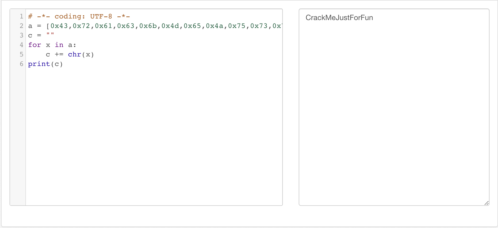
输入flag: CrackMeJustForFun
correct!
open_source-4
这题给了源码:
1
2
3
4
5
6
7
8
9
10
11
12
13
14
15
16
17
18
19
20
21
22
23
24
25
26
27
28
29
30
31
32
33
34
| #include <stdio.h>
#include <string.h>
int main(int argc, char *argv[]) {
if (argc != 4) {
printf("what?\n");
exit(1);
}
unsigned int first = atoi(argv[1]);
if (first != 0xcafe) {
printf("you are wrong, sorry.\n");
exit(2);
}
unsigned int second = atoi(argv[2]);
if (second % 5 == 3 || second % 17 != 8) {
printf("ha, you won't get it!\n");
exit(3);
}
if (strcmp("h4cky0u", argv[3])) {
printf("so close, dude!\n");
exit(4);
}
printf("Brr wrrr grr\n");
unsigned int hash = first * 31337 + (second % 17) * 11 + strlen(argv[3]) - 1615810207;
printf("Get your key: ");
printf("%x\n", hash);
return 0;
}
|
写的很清楚了 只要跳过所有的条件就给key:

flag: c0ffee
5-simple_unpack
这题和以前的pwn 4-flag一模一样 也是upx加壳
题目提示了此文件是个加壳了的二进制文件 所以打开ida的Hex窗口找:
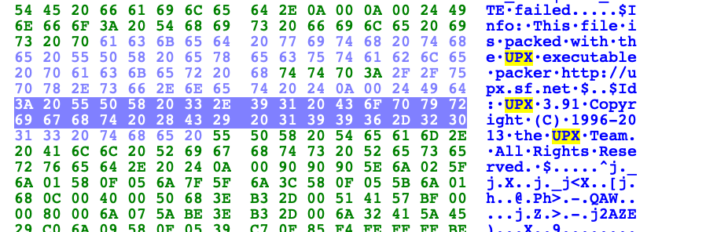
找到文件是给upx加壳过的 利用mac terminal上安装的upx 进行解壳 解完壳后可以去查看导入表有无损坏 这里就没有去查看 没有损坏:
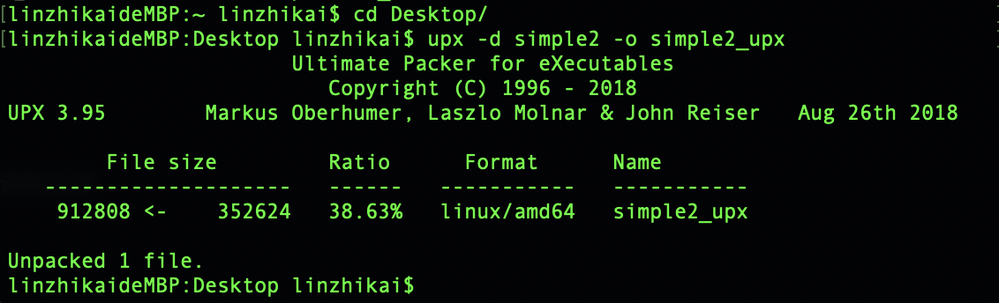
最后在main函数中看到了flag 直接跟进就可以看到flag:
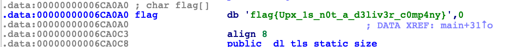
flag{Upx_1s_n0t_a_d3liv3r_c0mp4ny}
6-insanity
这题是个非常简单的题目 flag我是没想到会是这样子的 见识短浅(好吧 弱智了)
首先这是不可执行文件 扔进ida中找伪代码:
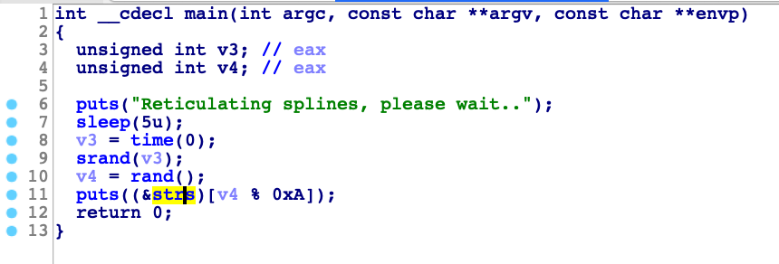
看到puts(&str)…跟进:
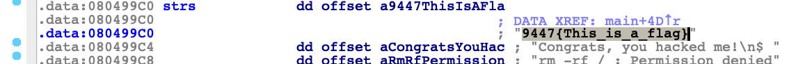
9447{This_is_a_flag}
7-logmein
直接上源码:(因为在string window 和 hex 窗口中没有找到可疑的字符串和加壳后的痕迹)
1
2
3
4
5
6
7
8
9
10
11
12
13
14
15
16
17
18
19
20
21
22
23
24
25
26
27
28
29
30
| void __fastcall __noreturn main(__int64 a1, char **a2, char **a3)
{
size_t v3; // rsi
int i; // [rsp+3Ch] [rbp-54h]
char s[36]; // [rsp+40h] [rbp-50h]
int v6; // [rsp+64h] [rbp-2Ch]
__int64 v7; // [rsp+68h] [rbp-28h]
char v8[8]; // [rsp+70h] [rbp-20h]
int v9; // [rsp+8Ch] [rbp-4h]
v9 = 0;
strcpy(v8, ":\"AL_RT^L*.?+6/46");
v7 = 28537194573619560LL;
v6 = 7;
printf("Welcome to the RC3 secure password guesser.\n", a2, a3);
printf("To continue, you must enter the correct password.\n");
printf("Enter your guess: ");
__isoc99_scanf("%32s", s);
v3 = strlen(s);
if ( v3 < strlen(v8) )
sub_4007C0(v8);
for ( i = 0; i < strlen(s); ++i )
{
if ( i >= strlen(v8) )
((void (*)(void))sub_4007C0)();
if ( s[i] != (char)(*((_BYTE *)&v7 + i % v6) ^ v8[i]) )
((void (*)(void))sub_4007C0)();
}
sub_4007F0();
}
|
可以跟进sub_4007f0()函数:
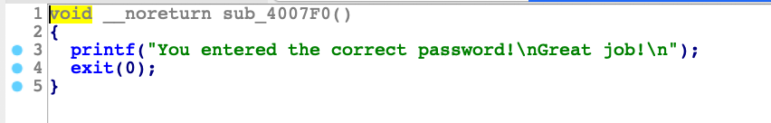
看到这里就说明s{i]是我们的flag 或者加密后的flag
这里给了一些字符、数组的定义 v8是最后循环要用到的字符串 v7和v6的值在循环中也有用到 这里只要满足了三个if语句就可以得到flag 所以贴出脚本:
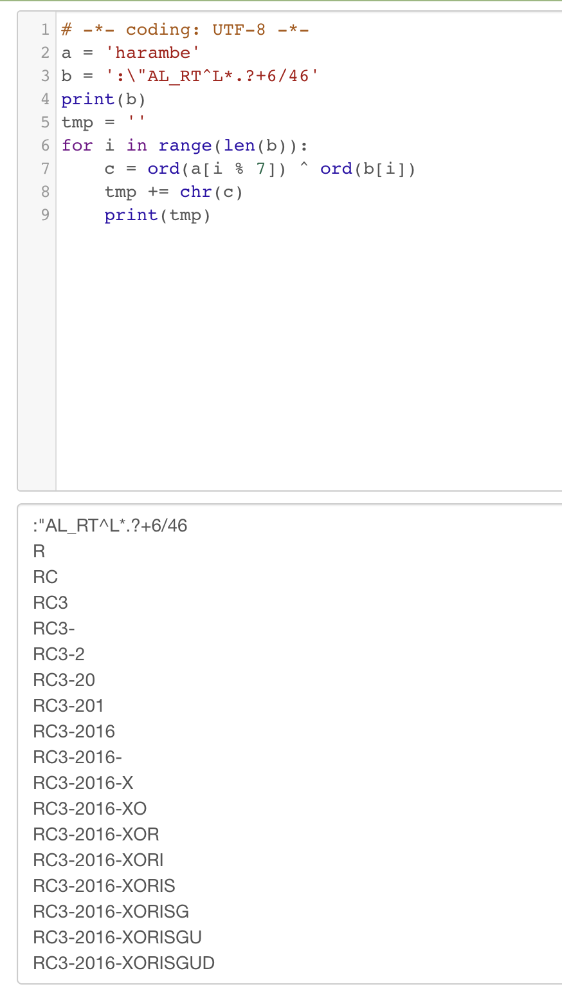
flag:RC3-2016-XORISGUD
- 姿势:(讲道理我的编程能力是真的差 都知道怎么运行的 不会写 憋屈！ 得好好学python 和c语言基础的函数了)
ord()函数:将字符转化成十进制
(byte):强制字节类型转换 若所强制的数值大于8b 则取低8位